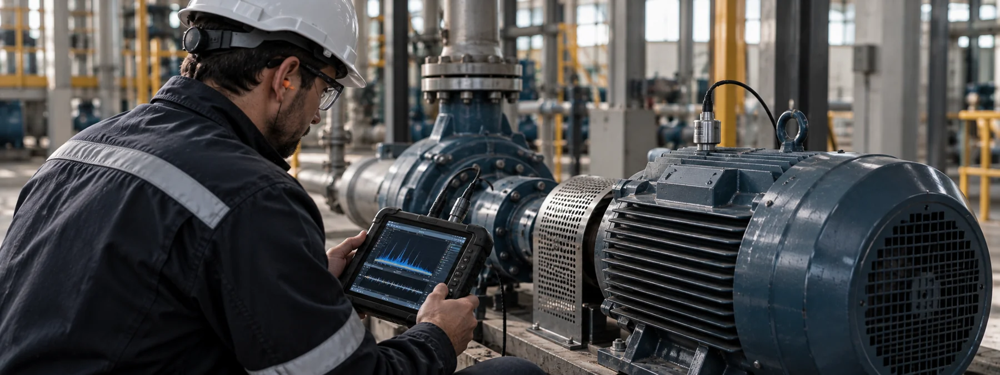
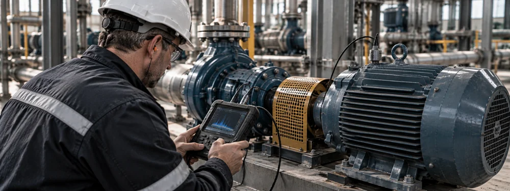
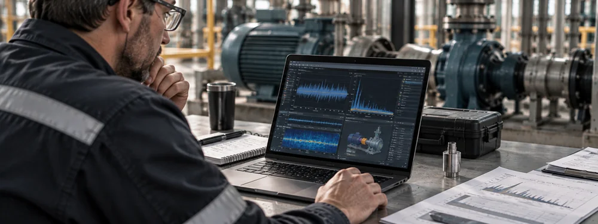
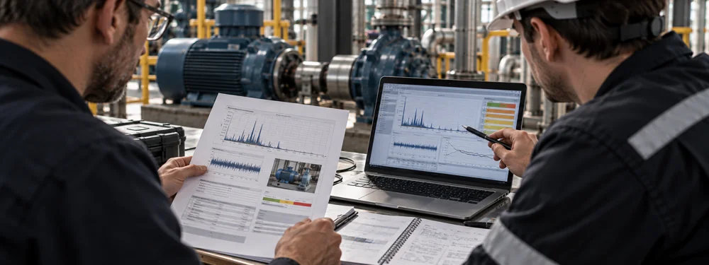

Desbalanceo
Cambios en la distribución de masa de un componente rotativo que generan vibraciones anormales y pueden acelerar el desgaste del equipo.

Conocé la condición de tus equipos rotativos y detectá señales tempranas de falla antes de que se conviertan en una parada imprevista.
Evaluemos tus equiposVer cómo trabajamos ↓Realizamos mediciones y análisis de vibraciones en equipos rotativos para identificar cambios en su comportamiento, detectar posibles anomalías y aportar información confiable para la planificación del mantenimiento.
A través del seguimiento de condición ayudamos a priorizar intervenciones, reducir fallas inesperadas y tomar decisiones de mantenimiento con mayor criterio técnico.
En los equipos rotativos, muchas fallas dan señales antes de producir una avería. Detectar esos cambios a tiempo permite anticipar intervenciones y evitar que un problema evolucione hasta una parada no programada.
El análisis de vibraciones aporta información sobre la condición de la máquina para reducir la dependencia del mantenimiento al fallo, priorizar recursos y planificar acciones antes de que el costo del problema aumente.
Cambios en la distribución de masa de un componente rotativo que generan vibraciones anormales y pueden acelerar el desgaste del equipo.
Problemas de alineación entre ejes o componentes acoplados que producen esfuerzos adicionales y aumentan el riesgo de falla.
Indicadores asociados a desgaste, deterioro o defectos en rodamientos que pueden detectarse antes de una falla crítica.
Movimientos o juegos excesivos en componentes, soportes o fijaciones que alteran el comportamiento vibratorio del equipo.
Condiciones de funcionamiento donde determinados componentes o estructuras presentan niveles de vibración superiores a los esperados.
Variaciones respecto de mediciones anteriores que permiten identificar una evolución desfavorable y priorizar una intervención.
El objetivo no es esperar a que la máquina falle, sino detectar cuándo su condición empieza a cambiar.
Realizamos mediciones y análisis de vibraciones sobre equipos rotativos para conocer su condición, identificar comportamientos anómalos y detectar indicadores tempranos de falla.
Evaluamos niveles globales, espectros y tendencias de vibración aplicando criterios de análisis según ISO 10816, complementados con metodologías específicas de diagnóstico según el tipo de equipo y la situación encontrada.
Las evaluaciones son realizadas por profesionales certificados Nivel II según ISO 18436, utilizando instrumental con certificados de calibración vigentes, asegurando trazabilidad y confiabilidad técnica en cada intervención.
A partir de los resultados elaboramos conclusiones y recomendaciones orientadas a definir prioridades de mantenimiento, necesidad de seguimiento o conveniencia de una intervención.



Del diagnóstico a una decisión
técnicamente fundamentada.
Definimos qué equipos evaluar, relevamos sus características, condiciones de funcionamiento, criticidad y antecedentes de mantenimiento para establecer correctamente el alcance del análisis.
Realizamos mediciones sobre los puntos definidos utilizando instrumental calibrado, registrando niveles y señales de vibración en condiciones representativas de operación.
Evaluamos niveles globales, espectros y tendencias, aplicando criterios según ISO 10816 y metodologías de diagnóstico para identificar comportamientos anómalos y posibles modos de falla.
Presentamos conclusiones y recomendaciones para determinar qué equipos requieren seguimiento, intervención, una evaluación complementaria o una acción de mantenimiento.
El objetivo es transformar la medición en información útil para anticipar problemas y planificar el mantenimiento con mayor criterio.
El análisis de vibraciones permite conocer la condición de una máquina sin necesidad de esperar a que aparezca una falla evidente.
A partir de mediciones periódicas y del seguimiento de tendencias es posible detectar cambios en el comportamiento de los equipos, identificar patrones asociados a distintas anomalías mecánicas y determinar qué activos requieren mayor atención.
Esta información permite priorizar intervenciones, planificar mantenimientos, reducir paradas no programadas y evitar reparaciones o reemplazos innecesarios.
Más que medir vibraciones, el objetivo es transformar los datos de funcionamiento de los equipos en información útil para tomar mejores decisiones de mantenimiento.
Detección temprana: Identificar cambios antes de que evolucionen hacia una falla más costosa.
Seguimiento de condición: Comparar mediciones en el tiempo y reconocer tendencias desfavorables.
Priorización de mantenimiento: Definir qué equipos requieren atención primero según su condición real.
Reducción de paradas imprevistas: Disminuir la probabilidad de interrupciones repentinas por fallas mecánicas.
Mejor planificación de intervenciones: Coordinar acciones de mantenimiento con mayor anticipación y criterio.
El análisis de vibraciones se aplica principalmente a equipos rotativos, como motores, bombas, ventiladores, reductores, compresores y otros conjuntos mecánicos donde la condición vibratoria puede aportar información sobre su estado de funcionamiento.
Para obtener el mayor valor del mantenimiento predictivo, lo ideal es contar con mediciones repetidas en el tiempo que permitan comparar tendencias y detectar cambios de condición. También pueden realizarse evaluaciones puntuales cuando existe una anomalía, una duda sobre un equipo específico o la necesidad de establecer una condición inicial de referencia.
Nuestra base operativa se encuentra en Buenos Aires, pero trabajamos en plantas y proyectos de toda la región, contemplando traslados y actividades en sitio cuando son necesarios.
Contanos qué equipos necesitás evaluar y cómo es actualmente tu estrategia de mantenimiento. Podemos ayudarte a definir un primer diagnóstico, establecer una condición de referencia y determinar los próximos pasos.
Evaluemos tus equipos¿Tenés un proyecto o necesitás resolver un problema técnico? Contanos brevemente la situación y coordinemos una conversación.
hola@sabater.com.ar ↗Buenos Aires, Argentina
Proyectos en todo el país.